Programmare
Micro:bit
MakeCode, microcontrollore, simulatore, download e primi progetti con sensori e LED.
Cosa vedremo
cos'è e a cosa serve: scheda embedded con processore ARM, LED 5×5, pulsanti e sensori
l'ambiente di lavoro completo: simulatore browser, toolbox a blocchi, workspace, salvataggio e download .hex
far parlare la matrice LED: icone, numeri scorrevoli, stringhe di testo animate
leggere il mondo fisico: shake, pulsanti A/B, pin di contatto, microfono, bussola e accelerometro
sei esercizi guidati: Love, dado casuale, Love Meter, clap on/off, bussola e contapassi con variabile
il modo di lavorare: ciclo simulatore → scheda fisica → osservazione → modifica → riadattamento
Micro:bit in breve
Micro:bit è un sistema embedded progettato per la formazione informatica: una piccola scheda programmabile con processore ARM Cortex-M4, matrice LED 5×5, pulsanti A e B, accelerometro, bussola, microfono e pin di contatto. Tutto il necessario per far dialogare codice e mondo fisico senza altri componenti. Nasce nel Regno Unito come progetto educativo della BBC ed è oggi usato nelle scuole di tutto il mondo.
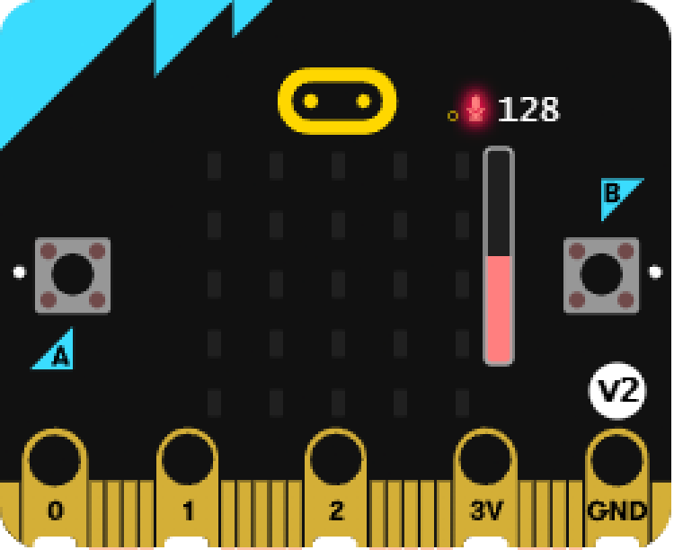
Microcontrollore
Il microcontrollore è un circuito integrato pensato per applicazioni specifiche di controllo digitale. A differenza di un computer generale, non serve a navigare sul web o a editare testi: esegue un programma fisso che legge sensori, elabora dati e controlla attuatori in tempo reale.
Embedded
Il termine "embedded" (incorporato) indica che la scheda è progettata per stare dentro oggetti, prototipi e sistemi di controllo. Non si usa da sola sul tavolo: fa parte di un prodotto con uno scopo preciso.
Non è un PC generico
Micro:bit ha 512 KB di flash e 128 KB di RAM, sufficienti per programmi di controllo ma non per applicazioni desktop. Questa limitazione è didattica: forza a pensare in modo efficiente.
Output immediato
La matrice LED 5×5 è il primo output visibile: mostra icone, numeri scorrevoli e stringhe di testo. Il risultato è visibile senza schermo aggiuntivo, il che rende ogni modifica immediatamente osservabile.
Progetto fisico
Il codice viene caricato sulla scheda tramite un file .hex — il programma tradotto in un formato che il processore sa eseguire — e produce un comportamento reale, non simulato. Tenere la scheda in mano e vedere la risposta ai propri gesti è l'elemento più motivante per chi impara.
Tour della scheda
Conoscere i componenti fisici aiuta a progettare: ogni sensore corrisponde a un tipo di input che possiamo usare nel codice.
Matrice LED
25 LED rossi disposti in griglia 5×5, programmabili singolarmente. Permette icone, numeri, frecce, testo scorrevole e animazioni frame-by-frame.
Pulsanti A e B
Due pulsanti digitali fisici per input immediato. Supportano pressione singola di A, di B o simultanea A+B, ideali per menu, giochi e conferme.
Pin di contatto
I grandi pin (P0, P1, P2, GND, 3V) permettono di chiudere circuiti con le dita o collegare componenti esterni come LED, buzzer e sensori aggiuntivi.
Accelerometro
Misura accelerazione su 3 assi. Rileva gesti come shake, face-up, face-down e tilt, trasformando il movimento fisico in evento nel programma.
Bussola
Il magnetometro misura il campo magnetico terrestre e restituisce la direzione in gradi. Richiede una breve calibrazione ruotando la scheda prima dell'uso.
Microfono (v2)
Presente su Micro:bit v2: rileva il livello sonoro e gesti come il clap. Apre progetti di interazione basati sul suono senza hardware aggiuntivo.
Fronte e retro della scheda
Sul fronte c'è tutto ciò che si tocca e si guarda: logo touch, 25 LED, pulsanti e pin. Sul retro lavorano i componenti invisibili: antenna radio, microfono, processore, speaker, pulsante di reset e connettori per USB e batteria.
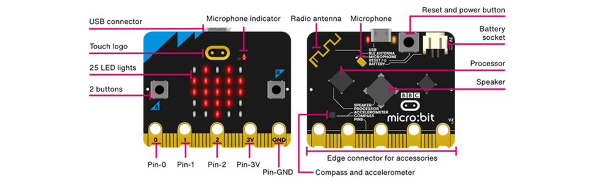
Il connettore per accessori corre lungo tutto il bordo inferiore: i cinque fori grandi si usano direttamente con le dita o con clip a coccodrillo, mentre le piste sottili tra un foro e l'altro richiedono una basetta di espansione dedicata.
Entrare in MakeCode
Si lavora online su makecode.microbit.org senza installare nulla: basta aprire il browser, creare un nuovo progetto, dargli un nome e iniziare a trascinare blocchi nel workspace. Il simulatore si aggiorna in tempo reale mentre si costruisce il programma.
Browser
MakeCode funziona interamente nel browser: nessuna installazione, nessun account obbligatorio. Questo lo rende accessibile su qualsiasi computer della classe, anche quelli con limitazioni di installazione software.
New Project
Il pulsante "New Project" crea uno spazio di lavoro vuoto e chiede un nome. Dare un nome significativo fin dall'inizio aiuta a ritrovare i progetti e a condividerli con i compagni.
Toolbox
La toolbox è divisa in categorie colorate (Basic, Input, Music, Logic, Loops, Variables…). Ogni categoria raggruppa blocchi dello stesso tipo, rendendo più rapido trovare ciò che serve.
Workspace
Il workspace è l'area di disegno dove si incastrano i blocchi per formare l'algoritmo. I blocchi si collegano solo se compatibili, riducendo gli errori di sintassi tipici del codice testuale.
La home di MakeCode
Aprendo makecode.microbit.org si arriva alla pagina iniziale. In alto un banner mostra progetti in evidenza; al centro l'area "My Projects" raccoglie i lavori salvati nella memoria del browser, con il pulsante viola "New Project" per crearne uno nuovo. Più in basso la galleria "Tutorials" propone progetti guidati passo passo — Flashing Heart, Name Tag, Smiley Buttons, Dice — utili per iniziare senza partire dalla pagina bianca.
Su un computer condiviso la memoria del browser può essere svuotata da altri: esporta i progetti importanti con "Salva su disco", così potrai reimportarli in qualsiasi momento con il pulsante "Import".
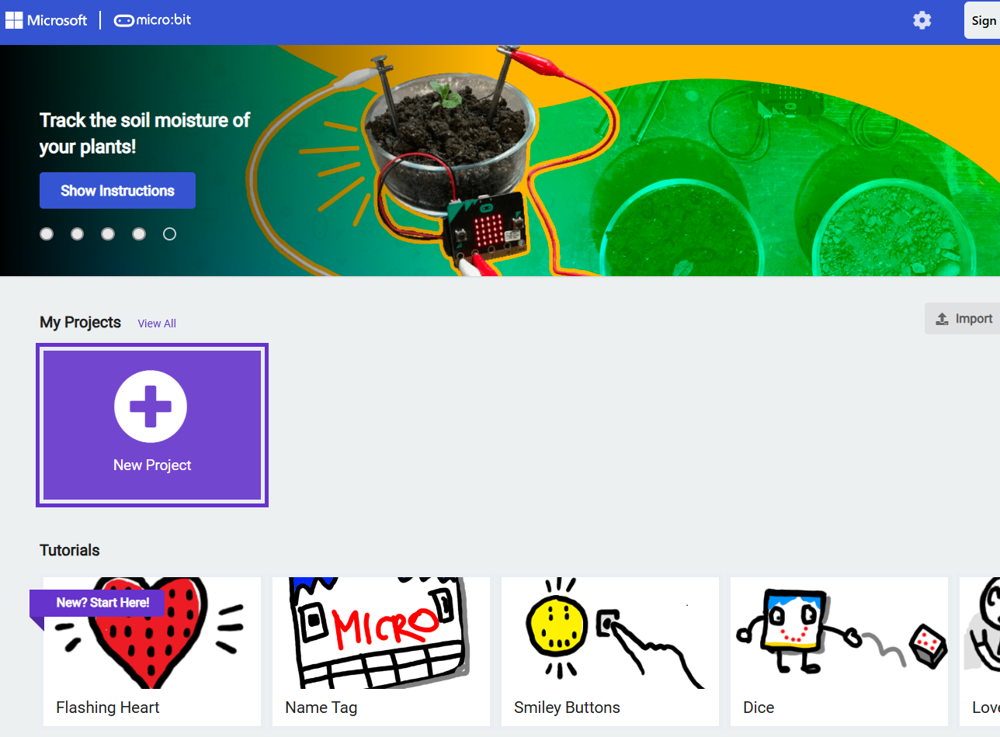
Le aree dell'IDE
MakeCode organizza l'interfaccia in sette zone con funzioni specifiche. La legenda numerata le individua sullo screenshot: sapere dove guardare riduce il tempo perso a cercare e aumenta il tempo speso a programmare.
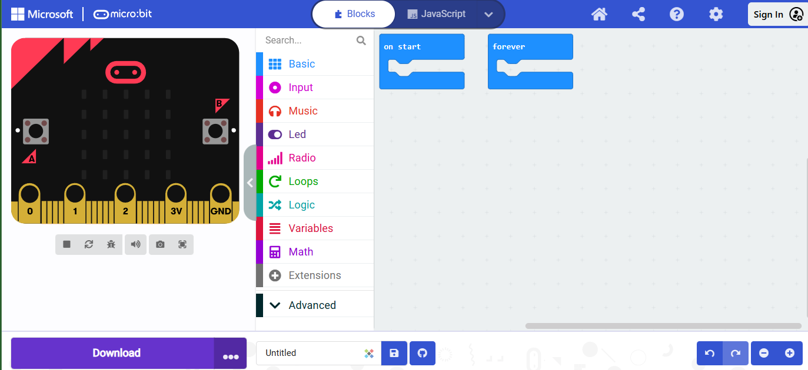
1234567Dal simulatore alla scheda
Il ciclo di lavoro è sempre lo stesso: costruire nel workspace, verificare nel simulatore, scaricare il file .hex, copiarlo sulla scheda e osservare il comportamento reale. Ogni anomalia diventa un'opportunità per modificare e ripetere il ciclo. Il simulatore non può riprodurre tutto — vibrazioni, latenze fisiche e sensori reali si verificano solo sulla scheda vera.
Dove vivono i blocchi
In MakeCode un blocco da solo non fa nulla: deve stare dentro un contenitore che decide quando viene eseguito. Un programma Micro:bit non parte dall'alto e finisce in basso come una ricetta: resta in ascolto di eventi e reagisce. Tre contenitori coprono quasi tutti i casi.
All'avvio
Eseguito una sola volta, quando la scheda si accende o riceve un nuovo programma. È il posto giusto per i preparativi: mostrare un titolo, azzerare un contatore, dare il valore iniziale alle variabili.
Per sempre
Ripete i suoi blocchi in ciclo continuo, senza mai fermarsi. Serve per le animazioni e per controllare di continuo un sensore, come la bussola che va riletta a ogni istante.
Quando…
Resta in attesa e scatta solo se l'evento accade: "quando shake", "quando pulsante A premuto", "quando suono forte". È il cuore della programmazione a eventi.
Nei prossimi progetti ritroverai sempre questi tre contenitori: Love usa "per sempre", il dado usa "quando shake", il Love Meter combina "all'avvio" e "quando pin premuto".
Love!
Il primo progetto usa due disegni LED alternati dentro un ciclo "per sempre": un cuore grande e uno piccolo che si alternano ogni 500 ms, creando un effetto pulsante. Il blocco "per sempre" è fondamentale: senza di esso il programma eseguirebbe l'animazione una sola volta e si fermerebbe. La pausa controlla la velocità: valori più bassi accelerano, valori più alti rallentano.
Il simulatore mostra subito l'animazione pulsante prima del download. Prova a cambiare la pausa a 100 ms e poi a 1000 ms nel simulatore per capire l'effetto senza caricare sulla scheda ogni volta.
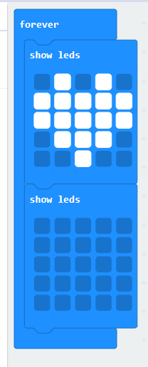
Show leds e show string
La matrice LED 5×5 è limitata, ma didatticamente molto efficace: obbliga a ragionare su rappresentazioni sintetiche. Ogni output deve essere leggibile in pochi pixel. Questo vincolo stimola il pensiero computazionale più di una console illimitata.
Show leds
Disegna un'icona personalizzata nella griglia 5×5 accendendo singoli LED. Utile per simboli, frecce, facce ed espressioni che non hanno un blocco predefinito nella libreria di icone.
Show number
Mostra un numero scorrevole sulla matrice. Ideale per punteggi di gioco, risultati del dado, misure dell'accelerometro o qualsiasi valore numerico che cambia nel tempo.
Show string
Fa scorrere testo breve da destra a sinistra sulla matrice. Il testo scorre una lettera alla volta, quindi messaggi lunghi richiedono più tempo. Utile per etichette, nomi e messaggi di stato.
Pause
Il blocco "pausa" ferma l'esecuzione per un numero di millisecondi definito. Senza pause tra due "show leds", la transizione è troppo rapida per essere vista. Le pause controllano il ritmo visivo del programma.
Eventi fisici
Micro:bit è utile perché gli eventi non arrivano solo da mouse e tastiera: arrivano dal corpo e dall'ambiente. Ogni sensore della scheda è una porta d'ingresso verso il mondo fisico, e ognuno si traduce in un blocco "quando…" nel codice.
Shake
L'accelerometro rileva la variazione brusca di accelerazione quando la scheda viene scossa. Serve anche per rilevare drop, face-up, face-down e tilt su più assi: ognuno è un gesto diverso da gestire con blocchi separati.
Button pressed
I pulsanti A e B sono input digitali semplici e affidabili. Supportano pressione di A, di B e combinazione A+B simultanea, permettendo tre comandi distinti con soli due pulsanti fisici.
Pin pressed
Toccare il pin P0 (o P1, P2) mentre si tiene GND chiude un circuito elettrico e genera un evento. La conduttività del corpo umano è sufficiente: non serve un componente esterno per questo tipo di input.
Sound
Il microfono integrato (Micro:bit v2) rileva il livello sonoro in tempo reale e gesti come il singolo clap. Permette di creare interruttori sonori, giochi a reazione e rilevatori di silenzio senza aggiungere hardware.
Dado a 6 facce
Il dado trasforma un gesto fisico — scuotere la scheda — in un numero casuale tra 1 e 6. L'accelerometro rileva la vibrazione e genera il trigger "shake". Il blocco "pick random" restituisce un numero intero nell'intervallo specificato. Questo progetto unisce evento fisico, generazione casuale e output visivo in sole due istruzioni.
Attenzione agli estremi: il blocco "pick random da 0 a 5" più 1 e il blocco "pick random da 1 a 6" producono lo stesso risultato, ma il secondo è più leggibile. Se il random parte da 0, il dado può mostrare zero — un errore frequente nei primi progetti.
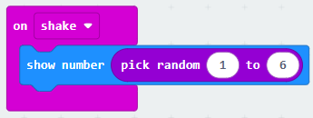
Love Meter
Il progetto usa i pin come input fisico: toccare P0 con un dito mentre si tiene GND con l'altro chiude il circuito e genera un evento "pin premuto". La scheda risponde mostrando un numero casuale tra 0 e 100 come se misurasse qualcosa. All'avvio il programma mostra il titolo "Love meter" per contestualizzare l'interazione prima che inizi.
È un esercizio semplice ma efficace: dimostra che il codice reagisce a un contatto fisico con il corpo, non solo a pulsanti meccanici. La conduttività della pelle è sufficiente per chiudere il circuito.
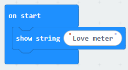
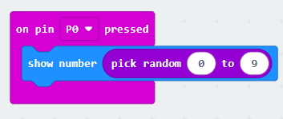
Clap! Clap!
Per accendere e spegnere qualcosa con lo stesso evento è necessario ricordare lo stato precedente. Il programma usa una variabile booleana "lightsOn" che vale vero o falso. Ogni clap controlla il suo valore attuale e lo inverte, producendo un comportamento a commutatore. Senza questa memoria il clap accenderebbe sempre, perché il programma non saprebbe distinguere lo stato attuale.
La variabile "lightsOn" è una memoria di stato: senza di essa il clap produrrebbe sempre la stessa azione. Questo progetto introduce il concetto di toggle (interruttore bistabile), fondamentale in qualsiasi sistema con stati alternativi.
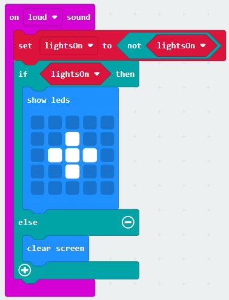
Bussola
Il magnetometro restituisce un valore in gradi da 0 a 359 che indica la direzione rispetto al nord. Il programma usa una variabile "degrees" per conservare la lettura corrente e poi applica regole condizionali per trasformare il numero in una direzione leggibile: N, E, S, O. Prima di usarla la scheda richiede una calibrazione — bisogna ruotarla fino a tracciare un cerchio con il LED.
Il valore grezzo del sensore (ad esempio 312) diventa informazione comprensibile (O = Ovest) solo dopo una regola di interpretazione. Questo è il principio base dell'elaborazione dei dati: dato grezzo → trasformazione → informazione.
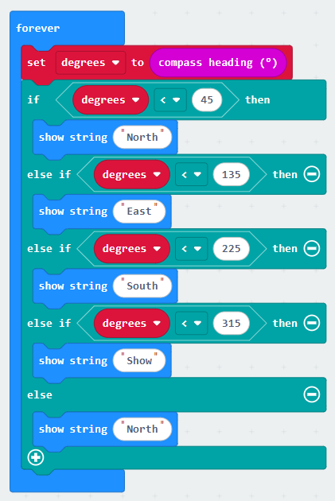
Contapassi
Il contapassi mette insieme tutto ciò che abbiamo visto: un evento fisico (lo shake rilevato dall'accelerometro), una variabile numerica "steps" e un output sulla matrice LED. All'avvio la variabile viene portata a 0: senza questa inizializzazione il conteggio partirebbe da un valore imprevedibile. A ogni scossa il blocco "cambia steps di 1" aggiunge uno al valore memorizzato, e il numero aggiornato viene mostrato subito sulla matrice.
È il pattern del contatore: evento + incremento + output. Nella realtà lo shake è solo un'approssimazione del passo — un contapassi vero filtra i movimenti per scartare i falsi positivi, come un urto o un gesto brusco della mano.
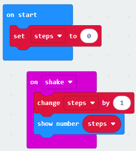
Variabili su Micro:bit
Clap, Bussola e Contapassi funzionano solo perché il programma ricorda qualcosa tra un evento e l'altro. Una variabile è una scatola con un nome e un contenuto che può cambiare: il blocco "porta … a" scrive un valore nuovo, il blocco "cambia … di" somma al valore esistente. Rileggiamo le tre variabili appena usate.
steps
Variabile numerica del contapassi: parte da 0 all'avvio e cresce di 1 a ogni shake. Se non venisse azzerata all'inizio, il conteggio riprenderebbe da un valore rimasto in memoria.
degrees
Conserva l'ultima lettura della bussola. Salvare il valore in una variabile permette di confrontarlo con più soglie nelle condizioni, senza rileggere il sensore a ogni confronto.
lightsOn
Variabile booleana: può valere solo vero o falso. Ricorda lo stato dell'interruttore e permette al clap di alternare acceso e spento invece di accendere sempre.
Aggiornamento
Ogni evento può leggere o cambiare le variabili. È questo che dà memoria al programma: senza variabili, ogni evento ripartirebbe da zero ignorando tutto ciò che è successo prima.
Download e caricamento
Il pulsante Download trasforma i blocchi in un file .hex: il programma tradotto nel formato binario che il processore della scheda sa eseguire. Non serve installare nulla: il Micro:bit collegato via USB appare sul computer come una normale chiavetta chiamata MICROBIT, e caricare il programma significa semplicemente copiarci dentro il file.
Scarica
Il pulsante Download genera il file .hex e lo salva nella cartella dei download del computer. Ogni file contiene l'intero programma: non esistono aggiornamenti parziali.
Collega
La scheda si collega con un cavo USB, che fornisce anche l'alimentazione. Con il porta-batterie funziona da sola: il programma resta in memoria anche senza corrente.
Copia
Trascina il file .hex nel drive MICROBIT. Durante la copia il LED giallo sul retro lampeggia: è la scheda che sta scrivendo il programma nella sua memoria flash.
Prova
Finita la copia, la scheda si riavvia da sola ed esegue subito il nuovo programma al posto del precedente. Se il comportamento non è quello atteso, si modifica in MakeCode e si ripete.
Debug fisico
Con Micro:bit il debug non è solo guardare lo schermo: bisogna osservare insieme il codice, il dispositivo e il gesto. Se il programma non risponde, il problema può stare nei blocchi, nel sensore o nel modo in cui il gesto viene eseguito — e ogni ipotesi va verificata separatamente.
Prima controlla se la logica dei blocchi fa ciò che promette: se fallisce già qui, il problema è nel codice, non nell'hardware.
Solo il dispositivo reale conferma sensori, contatti e tempi di risposta: il simulatore non riproduce vibrazioni e rumore ambientale.
Scuoti, premi, tocca o batti le mani più volte: un evento che scatta una volta su tre indica una soglia da regolare, non un programma rotto.
Modifica una sola cosa alla volta — una soglia, una pausa, un messaggio — così sai con certezza quale modifica ha prodotto l'effetto.
Segna cosa cambia tra simulatore e scheda reale: le differenze ricorrenti diventano regole utili per i progetti successivi.
Dal codice al mondo fisico
Micro:bit rende visibile il legame tra algoritmo, sensore, evento e comportamento della scheda.